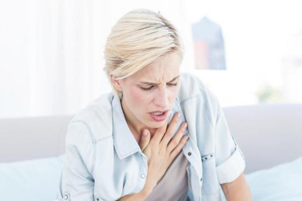

Overview
Asthma is a condition in which your airways narrow and swell and may produce extra mucus. This can make breathing difficult and trigger coughing, a whistling sound (wheezing) when you breathe out and shortness of breath.
For some people, asthma is a minor nuisance. For others, it can be a major problem that interferes with daily activities and may lead to a life-threatening asthma attack.
Asthma can't be cured, but its symptoms can be controlled. Because asthma often changes over time, it's important that you work with your doctor to track your signs and symptoms and adjust your treatment as needed.
Symptoms
Asthma symptoms vary from person to person. You may have infrequent asthma attacks, have symptoms only at certain times — such as when exercising — or have symptoms all the time.
Asthma signs and symptoms include:
- Shortness of breath 
- Chest tightness or pain
- Wheezing when exhaling, which is a common sign of asthma in children
- Trouble sleeping caused by shortness of breath, coughing or wheezing
- Coughing or wheezing attacks that are worsened by a respiratory virus, such as a cold or the flu